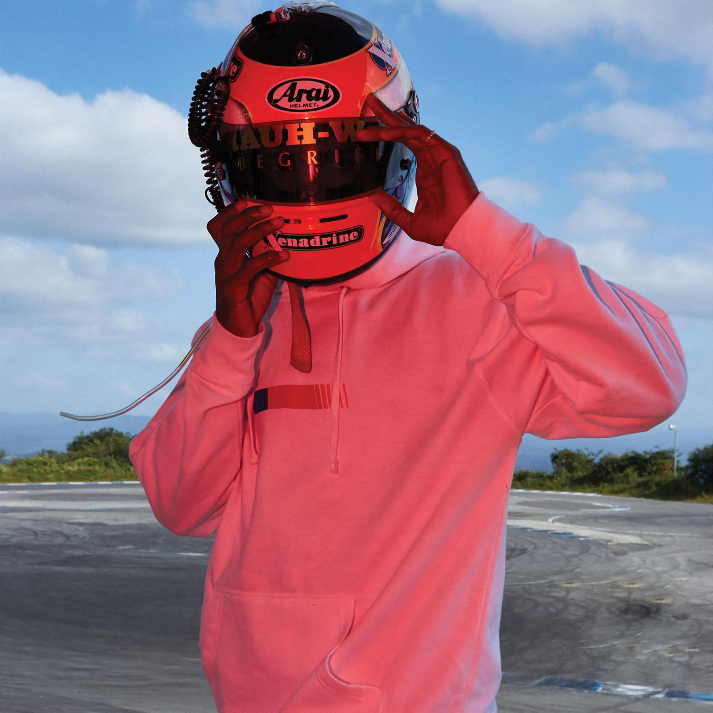

Wherever you are… I’m starting to think we’re a lot alike. Human beings spinning on blackness. All wanting to be seen, touched, heard, paid attention to. My loved ones are everything to me here. In the last year or 3 I’ve screamed
at my creator, screamed at clouds in the sky, for some explanation. Mercy maybe. For peace of mind to rain like manna somehow. 4 summers ago, I met somebody. I was 19 years old. He was too. We spent that summer, and the summer after, together.
Everyday almost. And on the days we were together, time would glide. Most of the day I’d see him, and his smile. I’d hear his conversation and his silence…until it was time to sleep. Sleep I would often share with him. By the time I realized I
was in love, it was malignant. It was hopeless. There was no escaping, no negotiating with the feeling. No choice. It was my first love, it changed my life. Back then, my mind would wander to the women I had been with, the ones I cared for and
thought I was in love with. I reminisced about the sentimental songs I enjoyed when I was a teenager.. The ones I played when I experienced a girlfriend for the first time. I realised they were written in a language I did not yet speak. I
realised too much, too quickly. Imagine being thrown from a plane. I wasn’t in a plane though. I was in a Nissan Maxima, the same car I packed up with bags and drove to Los Angeles in. I sat there and told my friend how I felt. I wept as the
words left my mouth. I grieved for them, knowing I could never take them back for myself. He patted my back. He said kind things. He did his best, but he wouldn’t admit the same. He had to go back inside soon, it was late and his girlfriend was
waiting for him upstairs. He wouldn’t tell the truth about his feelings for me for another 3 years. I felt like I’d only imagined reciprocity for years. Now imagine being thrown from a cliff. No, I wasn’t on a cliff. I was still in my car telling
myself it was gonna be fine and to take deep breaths. I took the breaths and carried on. I kept up a peculiar friendship with him because I couldn’t imagine keeping up my life without him. I struggled to master myself and my emotions. I wasn’t
always successful.

The dance went on.. I kept the rhythm for several summers after. It’s winter now. I’m typing this on a plane back to Los Angeles from New Orleans. I flew home for another marred Christmas. I have a windowseat. It’s December 27, 2011. By now I’ve
written two albums. This being the second. I wrote to keep myself busy and sane. I wanted to create worlds that were rosier than mine. I tried to channel overwhelming emotions. I’m surprised at how far all of it has taken me. Before writing this
I’d told some people my story. I’m sure these people kept me alive, kept me safe. Sincerely, these are the folks I wanna thank from the floor of my heart. Everyone of you knows who you are.. Great humans, probably angels. I don’t know what
happens now, and that’s alrite. I don’t have any secrets I need kept anymore. There’s probably some small shit still, but you know what I mean. I was never alone, as much as it felt like it. As much as I still do sometimes. I never was. I don’t
think I ever could be. Thanks. To my first love, I’m grateful for you. Grateful that even though it wasn’t what I hoped for and even though it was never enough, it was. Some things never are.. and we were. I won’t forget you. I won’t forget the
summer. I’ll remember who I was when I met you. I’ll remember who you were and how we’ve both changed and stayed the same. I’ve never had more respect for life and living than I have right now. Maybe it takes a near death experience to feel
alive. Thanks. To my mother. You raised me strong. I know I’m only brave because you were first. So thank you. All of you. For everything good. I feel like a free man. If I listen closely.. I can hear the sky falling too.